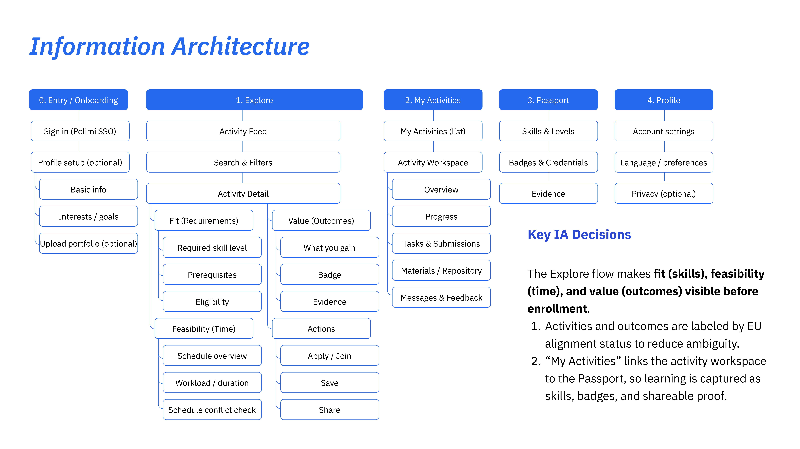

UX 设计 · 服务设计
UniPlus
米兰理工大学微认证平台
背景
UniPlus 是一个创新平台，重新定义学生在大学阶段的学习参与与成长路径。基于「积木模型」（Jenga Model），平台将正式课程与课外活动有机整合，帮助学生构建独特的复合型能力图谱。平台完全符合欧洲微认证标准，确保凭证获得国际认可。
问题
三个核心痛点阻碍了平台的采用：信息发现路径碎片化、缺乏与标准的有效对齐机制，以及教授与合作方之间发布工作流不一致。

图 1. 核心问题框架：发现、标准化与工作流一致性三大缺口。
查看详细研究

图 2. 研究综合概览与情景框架，用于明确设计方向。
设计过程
通过与利益相关方的共创工作坊和低保真原型测试，我们将学生的决策时刻与组织者的发布工作流深度对齐。这一过程催生了更清晰的平台概念、更完整的服务模型，并识别出贯穿端到端体验的关键 UX 切入点。

图 3. 从活动发布到凭证产出的端到端服务生命周期。
查看过程细节

图 4. 跨利益相关方群体的共创工作坊与低保真原型迭代。

图 5. 学生与组织者工作流，含关键决策节点与摩擦点标注。

图 6. 服务提供与生态地图，展示角色、触点与系统关系。

图 7. 信息架构与关键 IA 决策，支撑清晰度与可行性验证。
界面设计
最终概念将复杂的决策过程转化为一系列引导式操作——帮助学生发现机会、对比适配度、清晰注册、跟踪佐证材料，并随着时间推移逐步构建可见且可信的认证路径。
查看原型
图 8. 界面 A 组：探索与活动发现体验。

图 9. 界面 B 组：管理、注册与进度追踪视图。
项目成果
UniPlus 提出了一套可扩展的平台结构：改善学生的决策清晰度，为组织者提供更高的一致性，并使学习成果更具可追溯性。同时也为平台未来被学校纳入官方学生服务生态体系开辟了可能性。